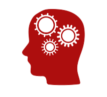

Political Communication and
Political Communication and
Public Opinion
How do cognitive processes and informational environments interact to influence people's political attitudes and behaviors?
Political Decision Making and Communication Technology
Under what conditions do communication technologies enhance or impair people’s ability to make sound political decisions?
Eye Movement Measures
How can we use eye movements as covert measures of attention, memory, stereotyping, sexual objectification, etc. across different domains of communication research (e.g., political communication, science communication, video games, etc.).